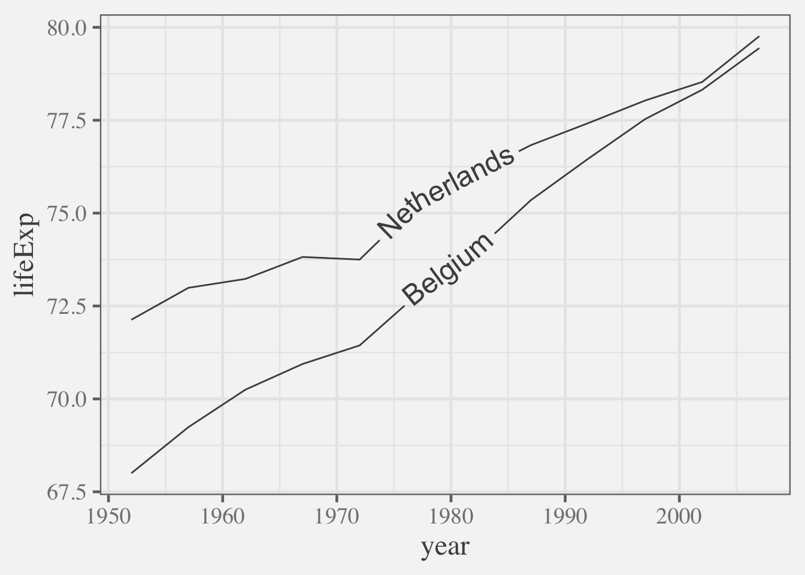

library(tidyverse)
# 1. define theme from convenience
# functions theme_grey, theme_classic
# theme_bw, etc.
theme_chalkboard <- theme_classic(
base_size = 20,
paper = "darkseagreen",
ink = alpha("lightyellow", .8),
accent = "orange")
# 2. Set theme
theme_chalkboard |>
theme_set()
# 3. Get plotting!
ggplot(data = cars) +
aes(x = speed, y = dist) +
geom_point() +
geom_smooth()
ggplot(data = diamonds) +
aes(x = cut) +
geom_bar()New ggplot2 theming to make plots more harmonious and sparkly ✨
And notes for using and updating extensions that haven’t adopted the dynamic geom_* theming yet.
TLDR: The next release of ggplot2’s theming is something to be excited for!
A ton of value is delivered to analysts in the form of not needed to worry about fiddly details when it comes to adhering to brand theme – enabling more focus on analysis and interpretation.
To that end transformative innovations are coming to ggplot2’s theming system: (thanks to the creative vision of PR # and release ggplot2_3.5.2.9000 it’s nearly here! ) We’ll look at two of them, and then implications for ggplot2 extension.
It’s never been easier to change the look and feel of your plot, as
paper,inkandaccentcolor governing arguments have been added to convenience functions liketheme_grey(),theme_classic(),theme_minimal()etc.Now ggplot2’s
geom_*()s (andstat_*()s) are responsive to theme! Now, geom_ and stat_ layers should automatically take on the look and feel of your theme!
Radical changes to plot look and theme from convenience functions theme_grey(), theme_classic(), theme_minimal() etc.
Let’s see how new arguments paper, ink and accent as well as old stalwarts base_size and base_family, can dramatically change the look and feel of your plot.
In example A. we make and use the theme_chalkboard – a modification of theme_classic. In example B. we make and use the theme_whitesmoke – a modification of theme_classic.
Example A. theme_chalkboard
Example B. theme_whitesmoke
# 1. define theme
theme_whitesmoke <- theme_bw(
base_size = 18,
base_family = "Times",
paper = "whitesmoke",
ink = "gray20",
accent = "magenta4")
# 2. set theme
theme_whitesmoke |>
theme_set()
# 3. Get plotting!
ggplot(data = cars) +
aes(x = speed, y = dist) +
geom_point() +
geom_smooth()
ggplot(data = diamonds) +
aes(x = cut) +
geom_bar()
What if my favorite geom_*() extension isn’t up-to-date with dynamic layer theming? How do I keep the chart to come into line with theme?
One unfortunate downside is that layer extensions that involve the creation of new Geom ggproto objects, with new default_aes defined are likely to fail to shine as brightly amid the glamour that the new changes bring.
Problem: ggextension::geom_*() doesn’t dynamically theme.
As we see below
theme_chalkboard |>
theme_set()
two_countries <- gapminder::gapminder |>
filter(country %in% c("Netherlands",
"Belgium"))
# Uh-oh! geom_textpath ...
ggplot(data = two_countries) +
aes(x = year,
y = lifeExp,
label = country) +
geomtextpath::geom_textpath()Solution: Override with set colors/sizes etc.
# Set defaults manually
ggplot(data = two_countries) +
aes(x = year,
y = lifeExp,
label = country) +
geomtextpath::geom_textpath(
color = "lightyellow",
size = 5
)A more dynamic solution: use theme_*$geom$ink, theme_*$geom$fontsize and friends for more harmonious look
ggplot(data = two_countries) +
aes(x = year,
y = lifeExp,
label = country) +
geomtextpath::geom_textpath(
# set color, size from theme
color = theme_chalkboard$geom$ink,
size = theme_chalkboard$geom$fontsize
)An even more dynamic solution: use get_theme()$geom$ink
Should you anticipate a possible change-up of your theme, you might use get_theme() instead of the name of the theme in the formulation above.
theme_whitesmoke |>
theme_set()
get_theme()$geom$ink
ggplot(data = two_countries) +
aes(x = year,
y = lifeExp,
label = country) +
geomtextpath::geom_textpath(
# set color, size from theme
color = get_theme()$geom$ink,
size = get_theme()$geom$fontsize
)[1] "gray20"
Are you an extender that needs to update your Geoms to take advantage of ggplot2’s new theming capabilities? Read on (maybe separate blog post)
Start new blog post…
Notes for Extenders on layered themes!
There’s great news for extensions that define new layers that use Geoms from ‘base’ ggplot2 lock stock and barrel - the dynamism will carry through to your layers if the new version of ggplot2 is loaded.
However, if you’ve created your own Geom object, you may have hard-coded default aesthetics. Color may be “black” and fill may be some shade of gray. This is modeled in the ggplot2 extension vignette geom_chull() example. Let’s have a look at that.
Your Geom may have hardcoded default aesthetics
Suppose you have created StatChull from the ggplot2 extension vignette, and have also created the modified GeomPolygon
# 1. Define compute
compute_group_chull <- function(data,
scales){
row_num_convex_hull_members <-
chull(x = data$x, y = data$y)
data |>
slice(row_num_convex_hull_members)
}
# 2. Define Stat
StatChull <- ggproto(
`_class` = "StatChull",
`_inherit` = Stat,
required_aes = c("x", "y"),
compute_group = compute_group_chull
)# 3. Define Geom: Modified GeomPolygon
GeomPolygonHollow <-
ggproto("GeomPolygonHollow",
GeomPolygon,
default_aes =
aes(colour = "black",
fill = NA,
linewidth = 0.5,
linetype = 1,
alpha = NA)
)
# 4. Test Geom X Stat w/ theme
theme_chalkboard |>
theme_set()
ggplot(mtcars) +
aes(x = drat, y = wt) +
geom_point() +
layer(stat = StatChull,
geom = GeomPolygonHollow,
position = position_identity())But, if we look at the definition of GeomPolygon in the latest ggplot2 development version, we see default aesthetics are no longer hardcoded, which is what allows our layers to be themed.
GeomPolygon$default_aesAesthetic mapping:
* `colour` -> `from_theme(colour %||% NA)`
* `fill` -> `from_theme(fill %||% col_mix(ink, paper, 0.2))`
* `linewidth` -> `from_theme(borderwidth)`
* `linetype` -> `from_theme(bordertype)`
* `alpha` -> NA
* `subgroup` -> NULLUse modifyList to piggy back on default aesthetics of ‘base’ ggplot2 Geoms, and get dynamism for free (also will be backward compatible!).
For extenders, there are a few ways to update Geom default aes so that they take on characteristics specified by theme.
# 1. determine aesthetics that need defaults
GeomPolygon$default_aesAesthetic mapping:
* `colour` -> `from_theme(colour %||% NA)`
* `fill` -> `from_theme(fill %||% col_mix(ink, paper, 0.2))`
* `linewidth` -> `from_theme(borderwidth)`
* `linetype` -> `from_theme(bordertype)`
* `alpha` -> NA
* `subgroup` -> NULL# Update create GeomPolygonHollow to have
# GeomLine defaults and fill = NA
GeomPolygonHollow <-
ggproto(`_class` = "GeomPolygonHollow",
`_inherit` = GeomPolygon,
default_aes =
GeomPolygon$default_aes |>
modifyList(GeomLine$default_aes) |>
modifyList(aes(fill = NA))
)
# 2. inspect newly defined aesthetics
GeomPolygonHollow$default_aesAesthetic mapping:
* `colour` -> `from_theme(ink)`
* `fill` -> NA
* `linewidth` -> `from_theme(linewidth)`
* `linetype` -> `from_theme(linetype)`
* `alpha` -> NA
* `subgroup` -> NULL# 3. Try out GeomPolygonHollow
ggplot(mtcars) +
aes(x = drat,
y = wt) +
geom_point() +
layer(stat = StatChull,
geom = GeomPolygonHollow,
position = "identity")‘wait until 4.0.0 is released and bump your required ggplot2 version’
Or use onLoad for backward compatibility
To be written up… > another way is described in PR ggforce
knitr::include_graphics("new-theme.png")